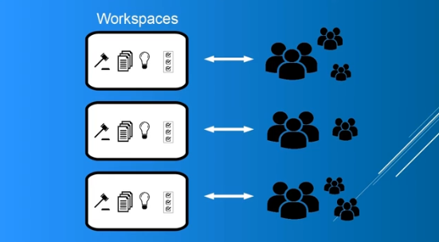
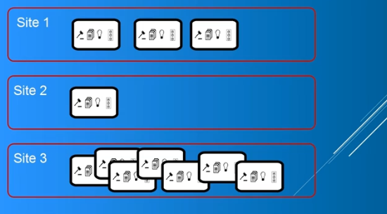
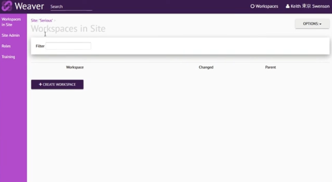
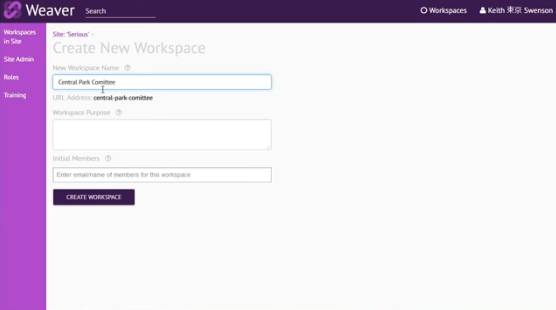

Hello my name is Keith Swenson, and I'm here to talk about Weaver work spaces. I'll explain a little bit about what a work space is how best to use them. What they're really needed for. Most importantly how to create them.

First of all the thing to understand about a work space a work space is going to contain your meetings your documents your discussion formants your action items it contains everything as a complete unit. What it does is allows a set of users a set of people access to them so when you set a person as a member of a workspace they will then have the ability to see everything that's in the workspace as well as update everything in a workspace.
Each workspace can have a completely different set of people so just because you have access to one workspace does not mean you have any access to any other workspace. What this really means is that you figure out the groups of people that you're working. If there is a distinct group of people that's involved in doing some bit of work it's a it's a space for doing work then what you can do is create a workspace and assign those people as members to it.
If you have a site on Weaver you can create as many workspaces as you want to there's there's essentially no cost to creating workspaces so you know if you have five different groups you're collaborating in create five groups add the users and you can have a meeting in there and you have all the members of the workspace that's the participants of the meeting.

Sites on the other hand is one level up from this. A workspace is always part of a site and a site is accounting end of this. Most of our sites are free sites where people use Weaver for no cost and but if you were to move up to a paid plan then that change would affect all of your workspaces that are part of the site. The site is sort of simply a a billing structure and within a site you can have as many workspaces as you want to. Each workspace is about access control it's about controlling who has access to what's in a workspace and they all run independently.

What I'm showing here is a site this is a site called Sirius. If I look at the administration of the site I can see the various parameters of the site see the name the description I can see some flags about it the colors and whatnot on the site. If I look at the roles I can see the users that are playing roles in this site but the most important thing about a site is the workspaces how many workspaces. This site has no workspaces so I'm gonna walk you through creating a workspace at this point.

I click create workspace and I get the form. I need a workspace name so if this is the workspace for the Central Park committee and quite often it works well to make a workspace around any kind of group that gets together it meets regularly any kind of subcommittee any kind of unit of people that need to interact.
Let's give a reasonable description here so I've given a a description. I can also specify here the initial members. If I don't specify anybody here I will be a member otherwise you just pick who is part of the the group that you want to be in the workspace you can change this later so it's not a big deal.
Click on create workspace and now your workspace has been set up for you. It brings you into the roles because that's the first place you want to be if you want to invite members. You can go and use the invite users option here click in their email address and this will send an email to them. If you want to invite a number of people you can then type their email addresses on into you know on lines like this and invite a bunch of people. This will also send email messages to them. Basically you don't have to do that you've created your workspace if I go back to the site I'll now see this workspace is listed there you can create more and more sites again. As a site owner you can create as many workspaces as you wish.
Hopefully that gives you an idea the reason that workspaces are needed is basically access control. It's about keeping all the stuff that you're going to share among a group of people within that group and allowing them to access it and no one else and that's what they're best used for and if you have a site they're quite easy to create.